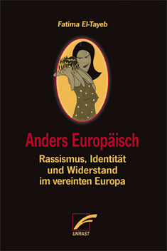

Durch persönliche Beobachtung und philosophische Analyse, historische
Neuerzählung und politische
Hinterfragung entwirft Donna Haraway in Das Manifest für Gefährten – Wenn Spezies sich begegnen (Merve,
2016) in erzählerischer Leichtigkeit und Eleganz ein Panorama des Zusammenlebens und Zusammenwerdens der
Gefährtenspezies Hund und Mensch, das neue Perspektiven auf Beziehungen und Geschichte/n in lebbareren,
zukünftigen Welten ermöglicht.

Karen Barad in Verschränkungen (Merve, 2015): „Ich weiß, dass die allgegenwärtige Vereinnahmung der
Quantentheorie diese zu gefährlichem Material macht; und dass ich auch noch Feministische Theorie zur
Liste meiner Anliegen hinzufüge, scheint auszureichen, um eben diese explosive Mischung detonieren zu
lassen.“

In Anders Europäisch (Unrast, 2015) nimmt Fatima El-Tayeb europäische Rassifizierung und Identitäten,
Kunst und Widerstand in den Fokus, theoretisiert und interveniert, historisiert, analysiert und
dokumentiert. El-Tayeb stellt dabei junge Europäer_innen of Color, ihre translokalen Strukturen und
Strategien im Umgang mit ihrem Ausschluss aus Nation und Europa in den Mittelpunkt ihrer Studie.